Best-of lists, people list, footer: layout variants
Screenshots of the prototype route, built from the site's own components with the real sitemap cohort, at 390 px and 1440 px. Long pages are cut at 2,600 px (phone) and 1,800 px (desktop); each frame scrolls. The reasoning and the owner questions are in proposal.md.
/movies/best: the best movies of all time
A. Ranked rows, 250 a page (recommended)
Rank, small poster, title, year and two genres, GoodWatch score ring. Numbered page links 1-250, 251-500, 501-700. About 21 KB of Brotli HTML a page.
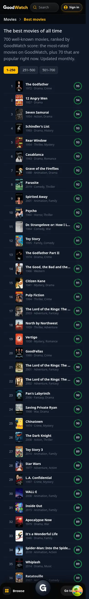
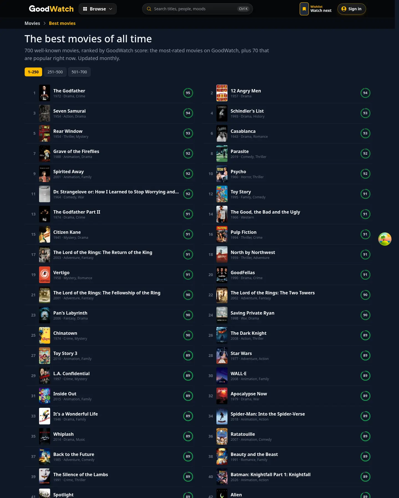
B. Poster grid by decade, one page
The category pages' poster cards under decade headings, with a decade chip row. About 64 KB of Brotli HTML and 1.7 MB raw for 700 movies.
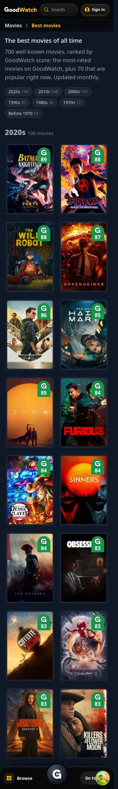
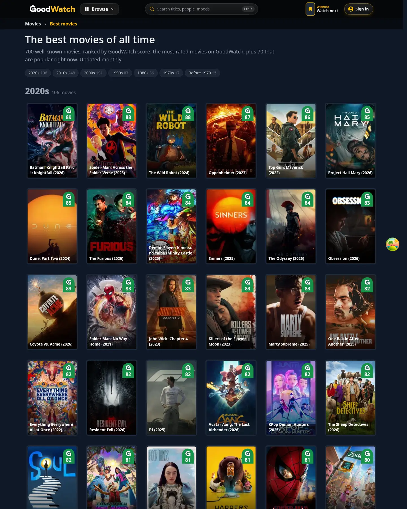
C. Top 12 as posters, then a genre index, one page
Twelve poster cards, then every other movie as a text link with its score ring, grouped by first genre, each group linking its genre page. About 51 KB of Brotli HTML.
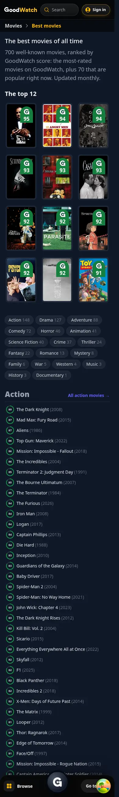
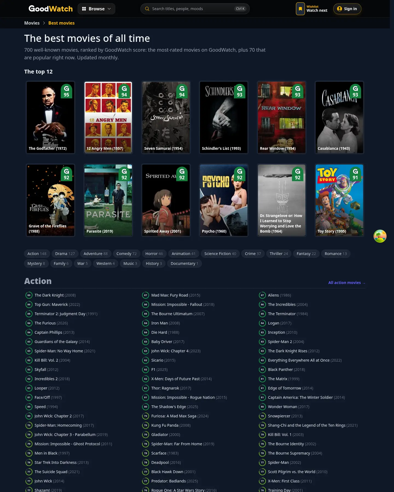
/shows/best: the best TV shows of all time
The same three layouts. Layout A shown; B and C differ only in their data (300 shows, 2 pages for A).
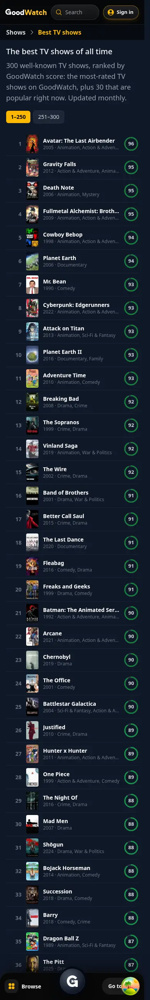
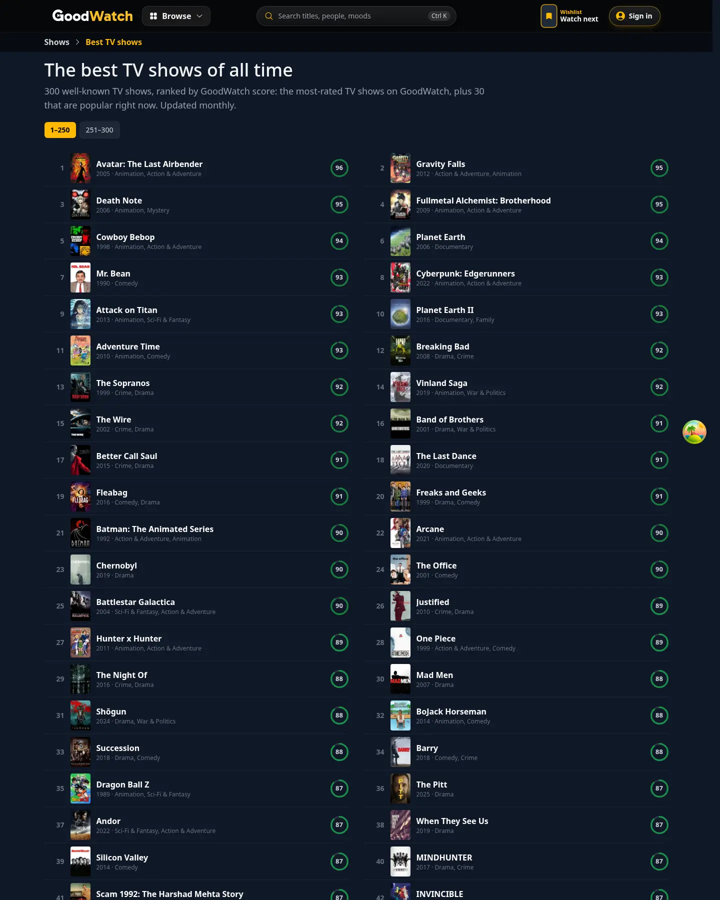
/people: popular actors
A. Cards with title links (recommended)
The person page's collaborator cards: portrait, name, role, up to four sitemap titles as links. About 7.7 KB.
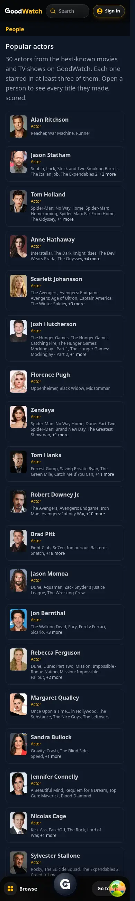
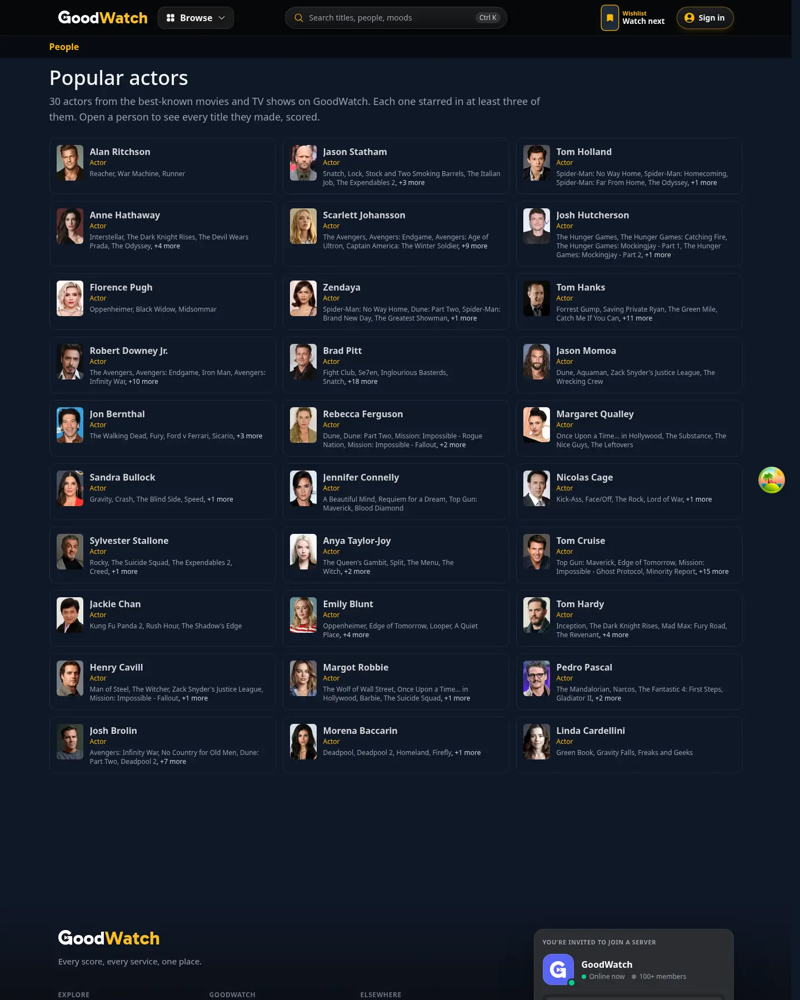
B. Portrait wall
Portraits at poster-card size with name and role. No title links. About 6.8 KB.
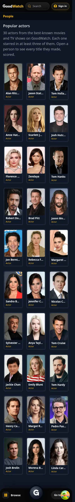
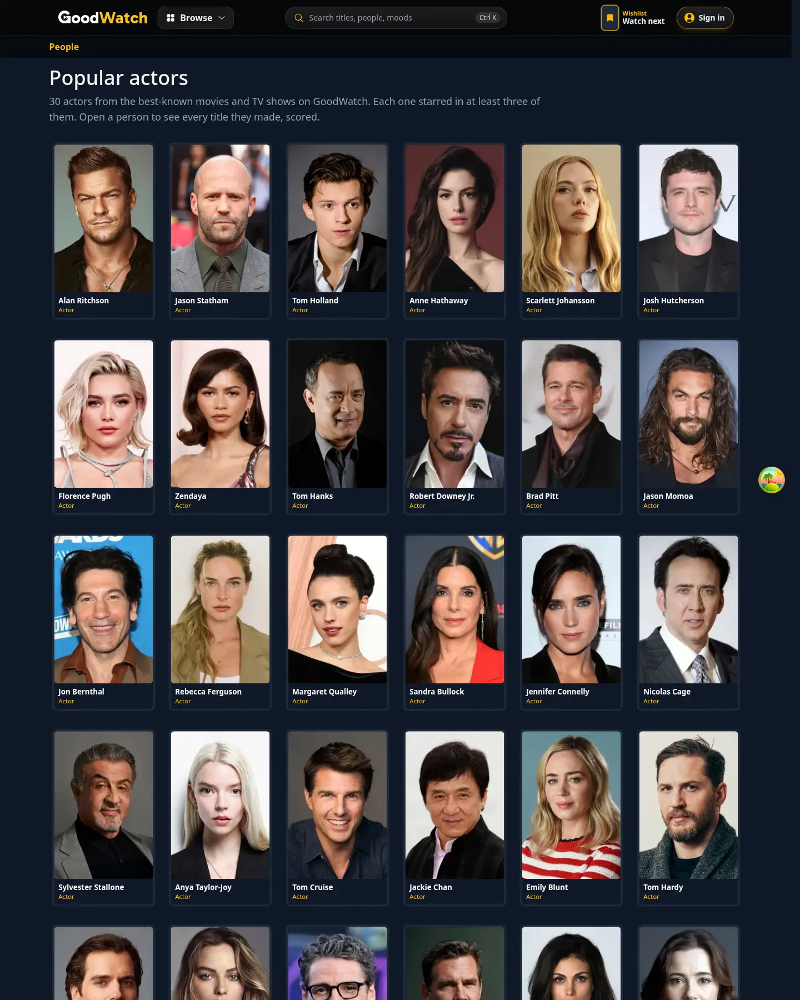
C. Rows with known-for posters
People search's banner look: portrait, name block with "See all titles", three posters. About 8.5 KB.
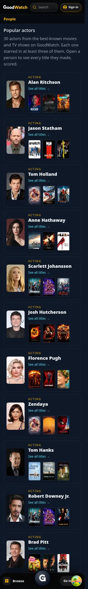
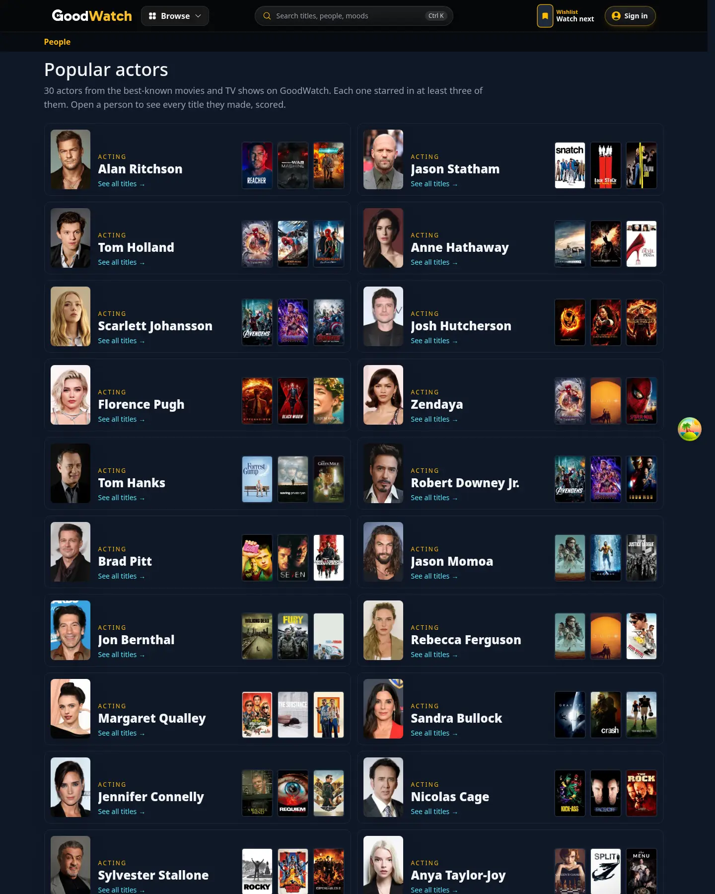
Footer placement
F1. A fourth column, Best of (recommended)
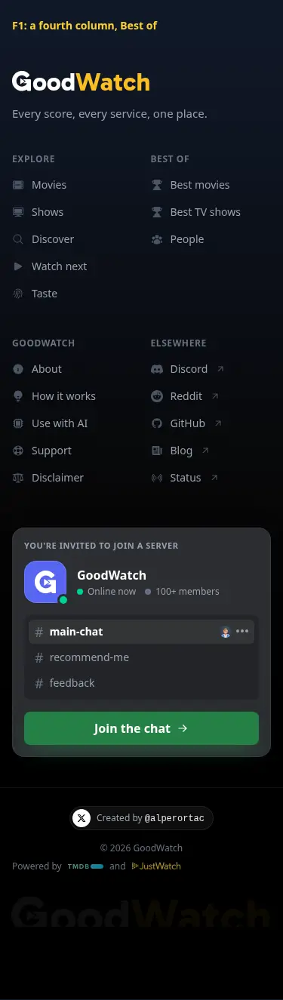
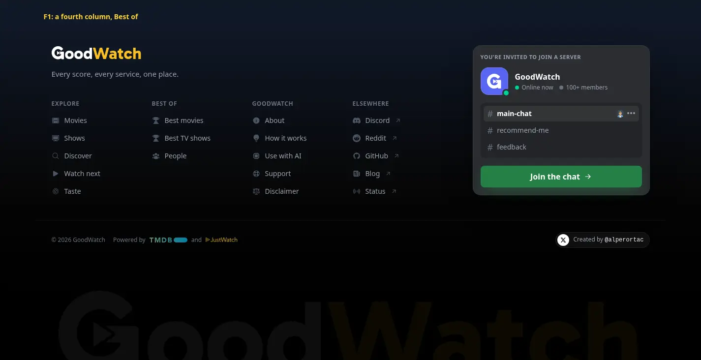
F2. Inside Explore
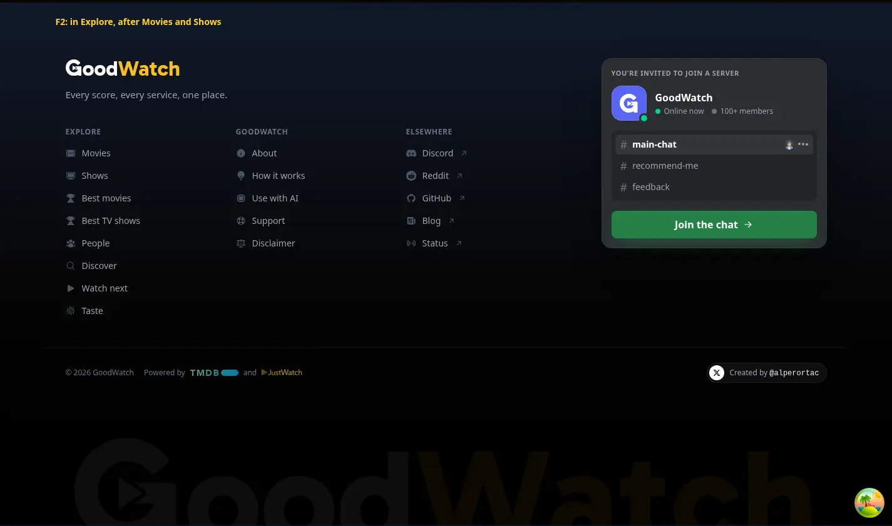
F3. Explore split into Browse and For you
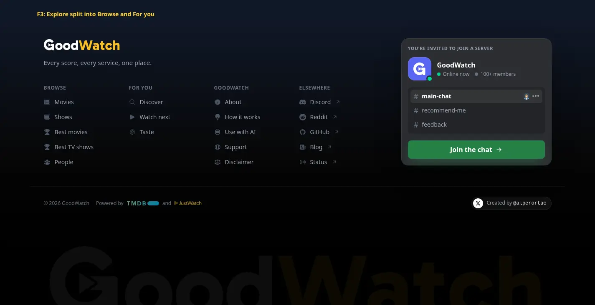